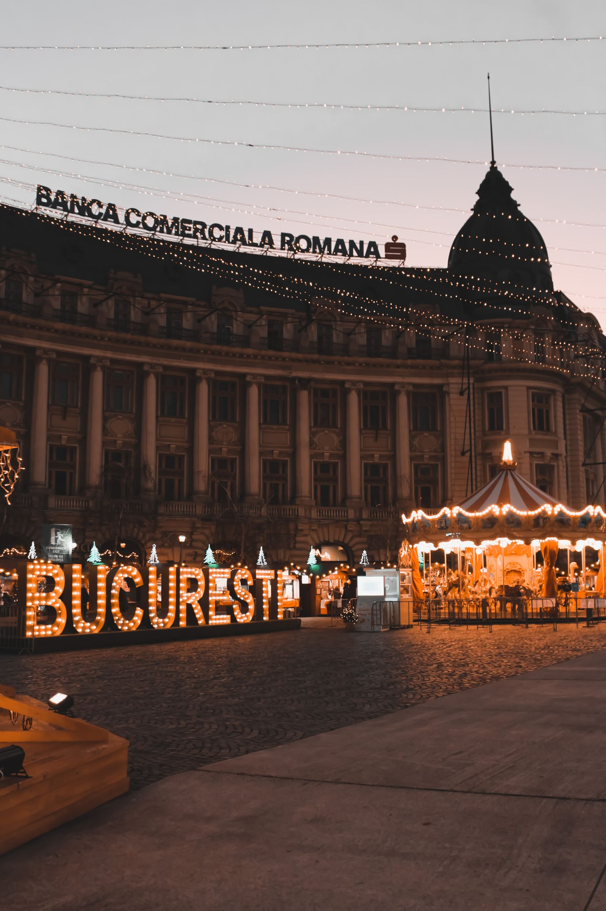

SEO local en rumano que gana en Bucarest, Cluj, Timisoara e Iasi.
Cuatro escalones, reconstruidos para Rumania. Sin jerga, sin informes de 40 páginas que nunca leerás, solo el trabajo que mueve la aguja.
Primero ve la imagen completa de su presencia en las búsquedas en Rumania (brechas, competidores, oportunidades) antes de pagar por nada.
Velocidad, experiencia móvil, indexación y estructura del sitio. Si Google no puede rastrear su sitio rumano limpiamente, nada más importa.
Citas, enlaces locales y menciones que le dicen a Google que usted es una verdadera empresa rumana que vale la pena clasificar.
Páginas nuevas, locales y realmente útiles todos los meses, del tipo que se posiciona en Rumania y del tipo que sus clientes realmente leen.
Comienza con una auditoría gratuita: verá el panorama completo de su presencia en las búsquedas en Rumania antes de pagar por nada. Luego viene la limpieza técnica, la creación de autoridades locales y contenido nuevo, local y útil cada mes. Usted mantiene el control todo el tiempo: informes en lenguaje sencillo, sin bloqueos y todo explicado de forma sencilla.
Si tienes una empresa en Rumanía, tus clientes buscarán lo que vendes ahora mismo, en rumano, en Google. Esa frase suena obvia, pero la mayoría de las empresas rumanas todavía actúan como si no fuera cierta. Tienen un sitio web que fue traducido del inglés o creado hace cinco años y nunca fue tocado, mientras un competidor en la calle atiende las llamadas. Rumania es el país de la UE más grande en el sudeste de Europa por población, con alrededor de 19 millones de personas, y su economía de Internet se ha estado acelerando durante una década. Bucarest concentra el dinero, las multinacionales y las agencias. Cluj-Napoca se ha convertido en la segunda capital tecnológica del país, llena de empresas de software y nuevas empresas. Timisoara ancla el oeste con software e ingeniería automotriz, e Iasi hace lo mismo en el noreste con TI y subcontratación. Juntas, estas cuatro ciudades concentran la mayor parte de la demanda de búsqueda comercial del país, y en tres de ellas, el SEO adecuado todavía es lo suficientemente raro como para que una campaña bien administrada pueda ganar rápidamente. El comprador rumano es un animal específico y hay que respetar su forma de comprar. eMAG, la plataforma de comercio electrónico dominante, capacitó a millones de rumanos para comparar precios, leer reseñas y verificar calificaciones antes de gastar un solo leu. Ese hábito de comparación no se limita a los productos. Cuando alguien en Bucarest necesita un abogado, un dentista o un equipo de renovación, abre Google, compara los mejores resultados, lee las reseñas y solo entonces llama. Son conscientes del precio, pero no baratos: pagarán por la calidad una vez que comprendan lo que están pagando. Las páginas vagas que ocultan los precios pierden frente a las páginas claras que explican el valor. Esta es la razón por la que los consejos genéricos de SEO importados de EE. UU. o el Reino Unido tienen un rendimiento inferior en este caso. Fue escrito para compradores que se comportan de manera diferente. El lenguaje es la otra mitad de la historia. El rumano domina la búsqueda local y el rumano tiene signos diacríticos que cambian de significado: s y t con una coma debajo aparecen en palabras cotidianas. Los motores de búsqueda los manejan, pero la mayoría de los sitios web comerciales no. Publican en inglés o traducen automáticamente y se preguntan por qué nunca clasifican para las consultas que escriben los clientes reales. Planifico cada campaña en torno a una investigación genuina de palabras clave en rumano, y las páginas se leen de forma natural a los hablantes nativos porque están escritas para ellos desde el principio, no se convierten después. El panorama competitivo es la buena noticia. Google maneja la inmensa mayoría de las búsquedas rumanas, por lo que hay un campo de batalla, no cinco. Fuera de Bucarest, la mayoría de los competidores locales tienen sitios web reducidos, perfiles comerciales de Google incompletos y casi ninguna reseña. Esa es una brecha por la que puedes atravesar. Trabajo como un estudio unipersonal, lo que significa que la persona hace el trabajo, no un administrador de cuentas que transmite mensajes. La auditoría es gratuita, el plan está escrito en un lenguaje sencillo y las primeras victorias suelen aparecer donde la competencia es menor: su propia ciudad, en su propio idioma.
Trabajo sólo con unos pocos clientes a la vez, por lo que cada empresa rumana obtiene Trabajo práctico y respuestas directas. — sin colas de entradas, sin administradores de cuentas junior.

Cuando alguien en Rumania busca lo que usted vende, Google muestra primero tres empresas y luego el resto. Si no estás en ese primer grupo, la mayoría de las llamadas van a otro lado.
Su empresa no aparece cuando los clientes de Rumania buscan en el mapa. Ese espacio es para quien optimizó primero.
Tus competidores rumanos recopilan reseñas cada semana. Coleccionas silencio y el algoritmo de Google se da cuenta.
Las páginas genéricas no pueden ganar "Rumania cerca de mí". Las páginas locales pueden hacerlo.
La clasificación en Rumanía no se trata de trucos. se trata de siendo la respuesta más completa y confiable cuando un cliente local realiza una búsqueda: en su sitio web, en su perfil comercial de Google y en toda la web local.
Eso es lo que construyo para ti: un perfil que parece vivo, páginas que coinciden con la forma en que los rumanos realmente buscan y un flujo de reseñas que sigue funcionando mientras administras tu negocio.
Aquí no hay equipo de ventas de agencia: soy la persona que hace el trabajo y la persona que responde cuando preguntas qué está sucediendo.
Trabajo con empresas de servicios locales en Rumania (plomeros, clínicas, restaurantes, comercios), no con marcas empresariales.
Mes a mes, siempre. Mantengo a los clientes rumanos ofreciéndoles resultados, no encerrándolos en papeleo.
Te ayudo a obtener reseñas genuinas de la manera correcta y a responderlas todas, porque en Rumania, eso representa la mitad de la clasificación.
Arreglo los aspectos técnicos complicados y los explico en palabras sencillas. Mantienes el control sin necesidad de aprender SEO.
Sin niveles, sin ventas adicionales, sin llamadas "empresariales". Un plan que cubre todo lo que una empresa rumana necesita para ganar búsquedas locales.
Obtenga una auditoría SEO gratuita de su negocio en Rumania: un desglose en inglés sencillo de lo que lo está frenando y exactamente lo que yo solucionaría primero.
Solicite mi auditoría gratuitaRespuestas directas a las preguntas que más escucho de los empresarios rumanos.
Sí, si tus clientes son rumanos. Los rumanos buscan servicios locales en rumano, incluidos los signos diacríticos adecuados, y un sitio sólo en inglés no detecta las consultas que conllevan intención de compra. El inglés funciona para el sector de subcontratación de TI vendiendo a clientes extranjeros, pero para los fontaneros de Cluj o los dentistas de Timisoara, el contenido rumano es lo que clasifica y lo que convierte.
eMAG capacitó a una generación de compradores rumanos para comparar antes de comprar, y ese comportamiento se extiende a todos los sectores. Sus páginas deben responder las preguntas de comparación desde el principio: qué está incluido, cuánto cuesta, en qué se diferencia de la opción más económica. Estructuro las páginas de servicios en torno a estas consultas comparativas porque así es como realmente deciden los rumanos, y las páginas que eluden la pregunta sobre el precio pierden frente a las páginas que la responden.
Empiece donde están sus clientes, no donde está el prestigio. Bucarest tiene el volumen pero también la competencia más feroz. Cluj-Napoca, Timisoara e Iasi tienen una demanda en rápido crecimiento y muchas menos empresas hacen SEO correctamente. Por lo general, recomiendo ganar primero en su ciudad natal y luego expandirse a Bucarest una vez que los ingresos de las victorias locales financien la pelea más grande.
Primero revisan Google. Las reseñas, calificaciones de estrellas, fotografías y horarios de apertura se escanean antes de que alguien llame. Un perfil con reseñas recientes y genuinas y fotografías reales supera a un competidor mayor con un perfil delgado casi siempre. Construyo una rutina de revisión en su operación para que sigan llegando pruebas nuevas sin que usted tenga que buscarlas.
Los más comunes: publicar contenido en inglés y traducirlo automáticamente al rumano, ignorar los signos diacríticos en las URL y los encabezados, incluir palabras clave de Bucarest en páginas que sirven a otras ciudades y ejecutar un perfil comercial de Google con la categoría incorrecta. Cada uno de estos problemas se puede solucionar en el primer mes, y solucionarlos suele ser suficiente para pasar una página de invisible a competitiva en ciudades más pequeñas.
También ayudo a empresas de estas zonas rumanas a posicionarse en Google.
Reserve una llamada estratégica gratuita de 30 minutos. Auditaré tu visibilidad rumana en vivo y te mostraré exactamente lo que se necesitaría para llegar al top 3.